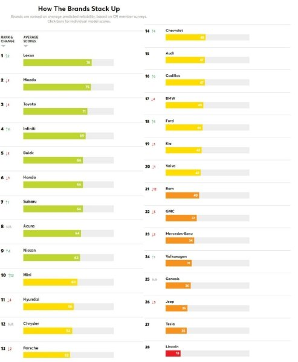
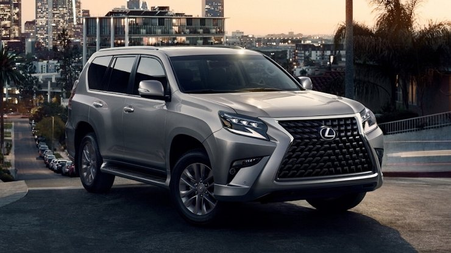

В рейтинге надежности марок в 2021 году изменился лидер, а самая надежная модель авто смогла набрать максимально возможные 100 баллов.
Опубликован ежегодный рейтинг качества новых автомобилей от Consumer Reports. Американское издание назвало самые надежные и самые ненадежные марки и модели авто 2021 года.
Традиционно в Consumer Reports составдяют свой рейтинг на основе отзывов владельцев о первых 12 месяцах владения новой машиной. В рамках опроса их попросили оценить свои автомобили по 17 разным параметрам.
Среди брендов на первое место вышел Lexus – 76 баллов из 100 возможных. Японская марка потеснила на второе место Mazda (75 баллов) и Toyota (71). В хвосте рейтинга оказались Lincoln (18), Tesla (25) и Jeep (26).
Самый надежный автомобиль 2021 года – внедорожник Lexus GX 460, сумевший получить максимальные 100 баллов. Вторая позиция – у электрокроссовера Kia Niro EV (95), а третья – у подзаряжаемого гибрида Toyota Prius Prime (93).
ТОП-10 самых надежных авто 2021 года:
- Lexus GX460 – 100 баллов
- Kia Niro EV – 95
- Toyota Prius Prime – 93
- Toyota Prius – 91
- Cadillac XT5 – 89
- Mazda MX-5 Miata – 88
- Honda Insight – 87
- Toyota Highlander – 86
- Subaru XV – 85
- Mazda CX-9 – 85
Машины признанные самыми ненадежными в 2021 году
Наиболее проблемным неожиданно назван кроссовер Mercedes-Benz GLE (5 баллов).
Также низкий рейтинг надежности у двух моделей Ford — Explorer (8 баллов) и Mustang (9).
Самые ненадежные авто 2021 года:
- Mercedes-Benz GLE – 5 баллов
- Ford Explorer – 8
- Ford Mustang – 9
- Chevrolet Silverado – 11
- Chevrolet Corvette – 13
- Volvo XC90 – 17
- Volkswagen Tiguan – 18
- Tesla Model Y – 18
- Chrysler Pacifica – 18
- Subaru Ascent – 18